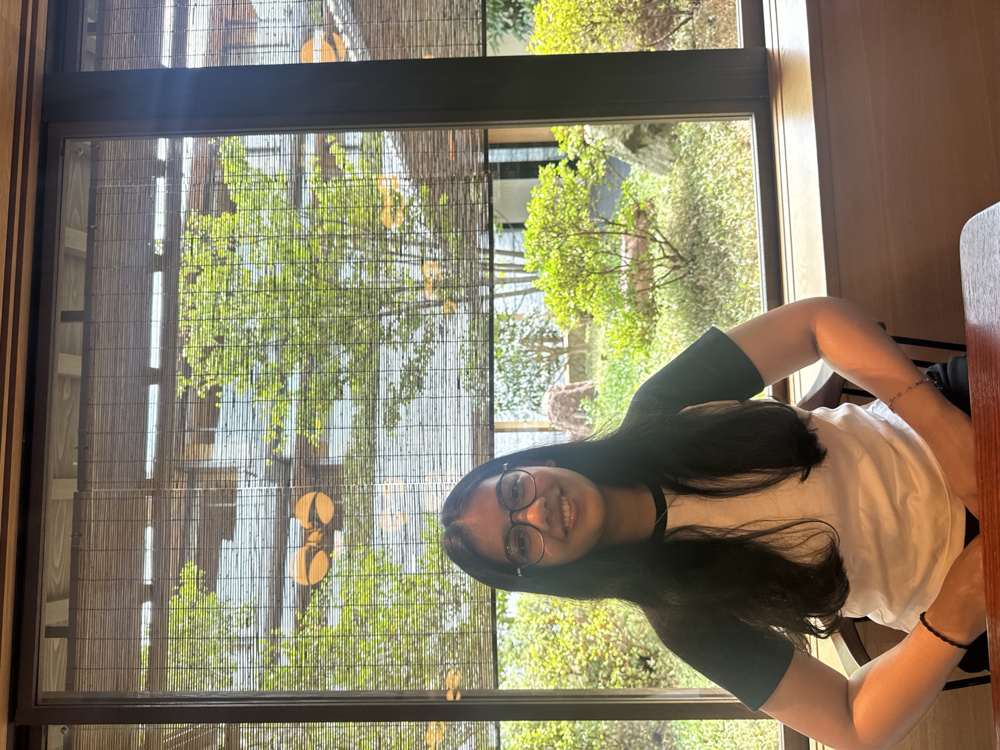

Radhika Malpani is a designer and technologist exploring immersive storytelling through digital experiences and visual media. Working at the intersection of design and technology, she creates work that bridges the physical and digital, drawing from cultural narratives, architectural forms, and human moments across continents.
Currently a junior at Parsons School of Design majoring in Design and Technology with a minor in Photography. Her practice spans interactive media, digital design, and visual storytelling, investigating how technology can amplify narrative and create deeper connections between people and their environments.
Based between Tokyo, Mumbai, and New York.